03 / A LITTLE ABOUT ME
爱好有点多。
倒也不打算精简。
潘冠宇 / ENTP
认真打球，也认真去玩。
HELLO AGAIN
名字三个字，
生活有很多面。
我是潘冠宇。球场上是医学队长，课堂里学全球卫生，抖音里叫“潘潘潘冠冠”。篮球占了大学生活很大一部分，攀岩、健身、腰旗橄榄球、滑雪也都是我的爱好。
我喜欢出门看看，拍下山、海和城市，也拍猫。如果你也爱运动、旅行和猫，我们大概有得聊。
ENTP运动旅行猫
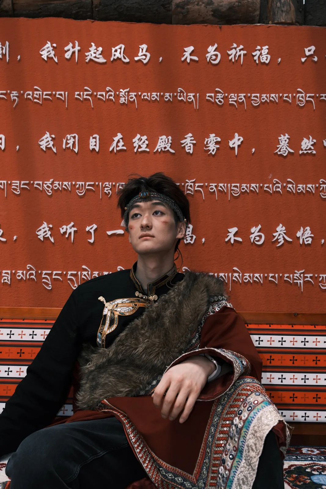
PHOTO JOURNAL
从小时候，到现在。
17 张照片


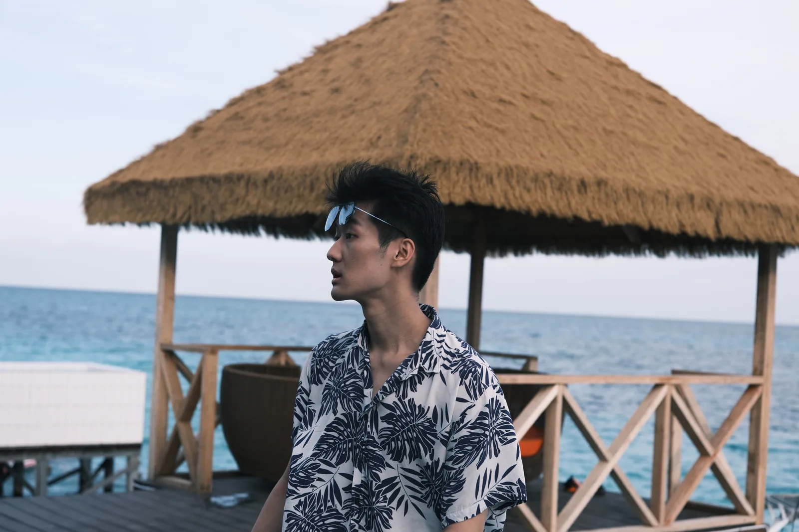
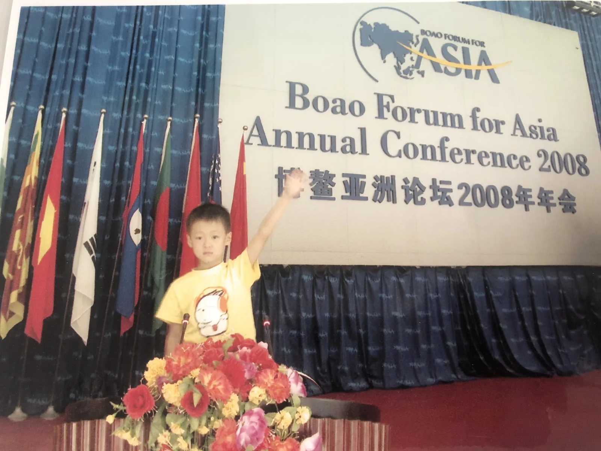
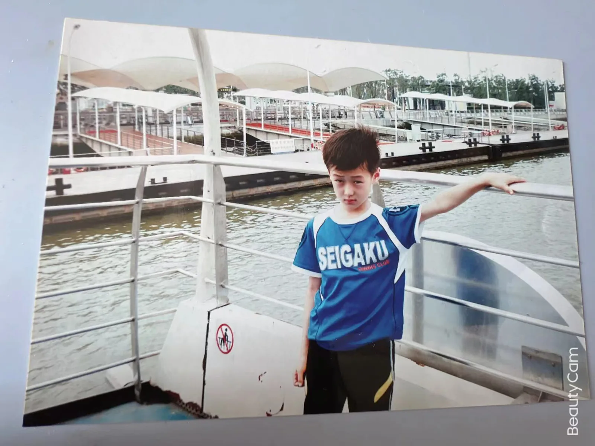
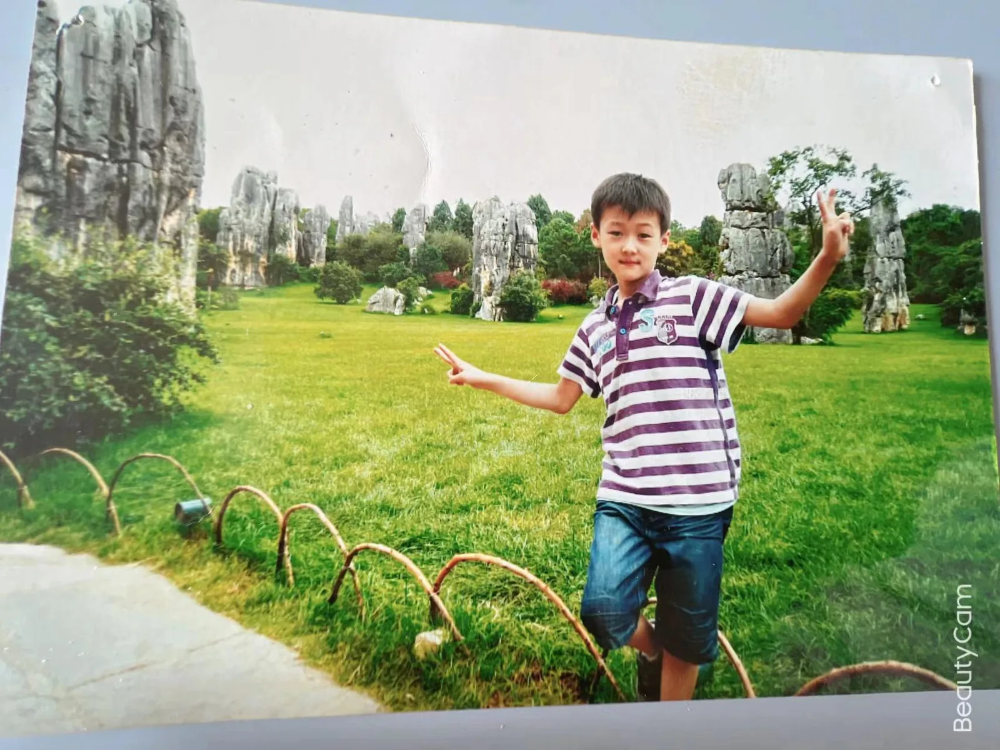
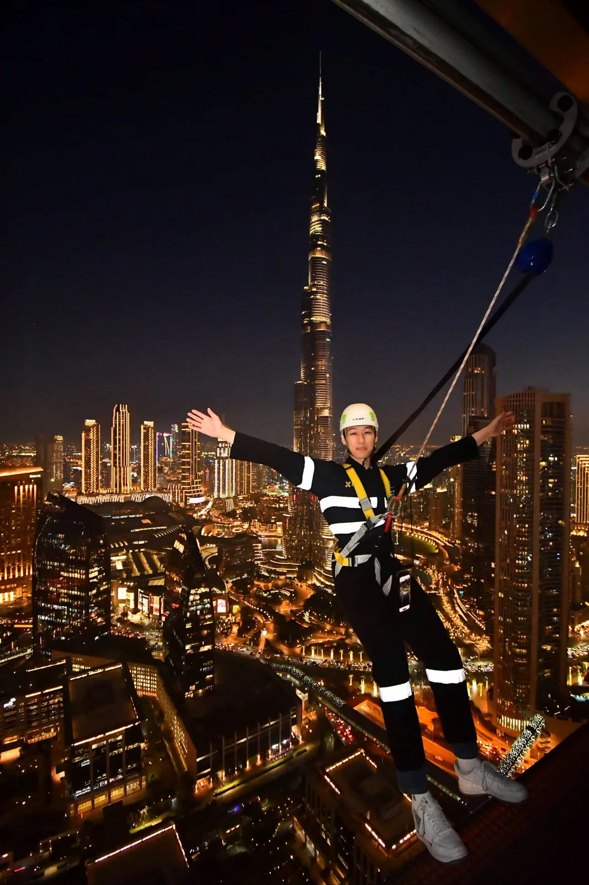
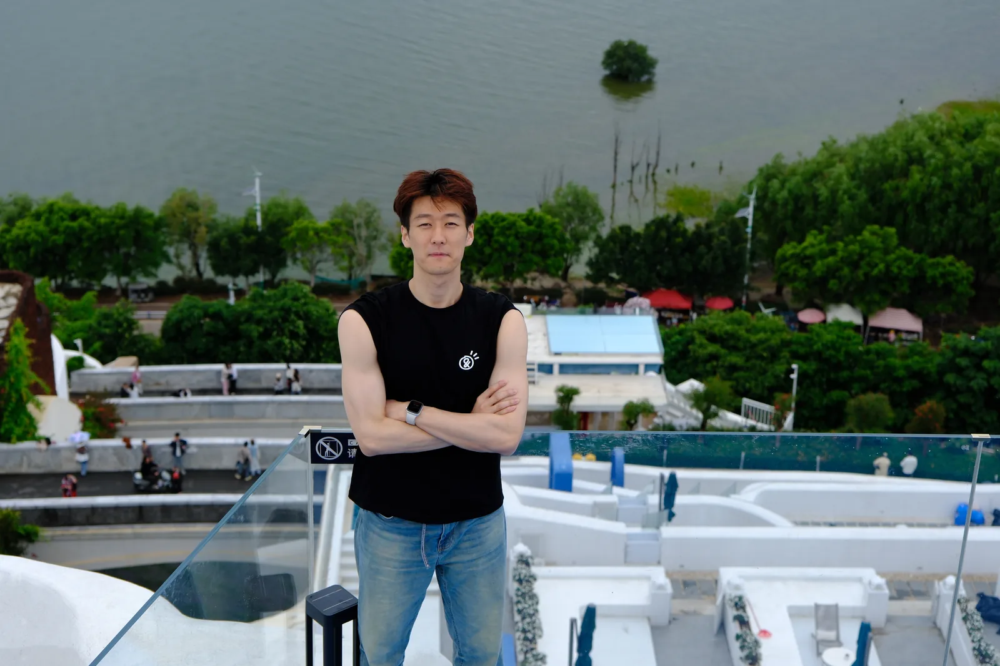
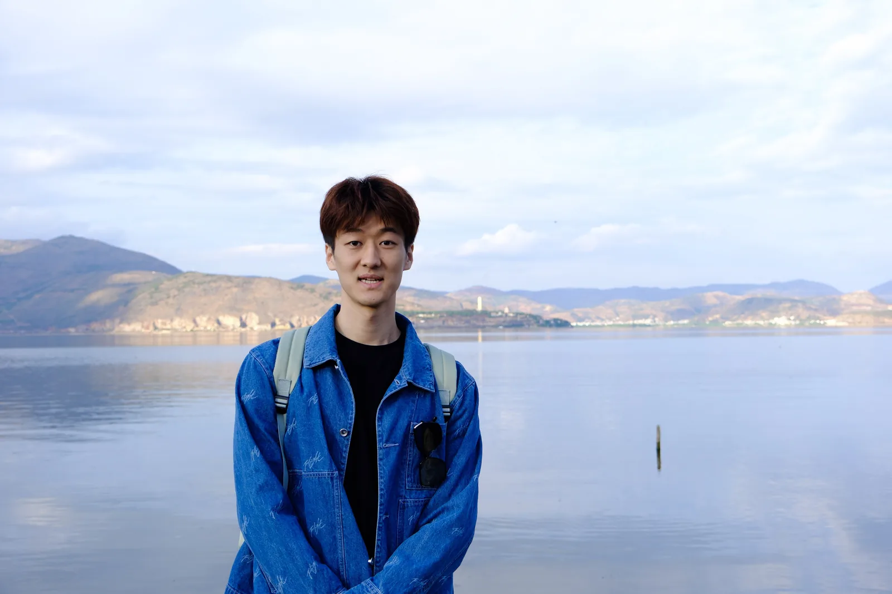
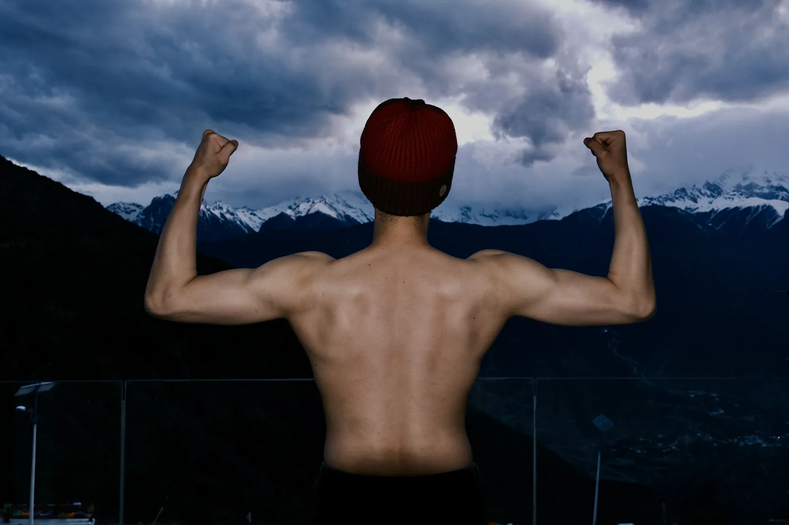
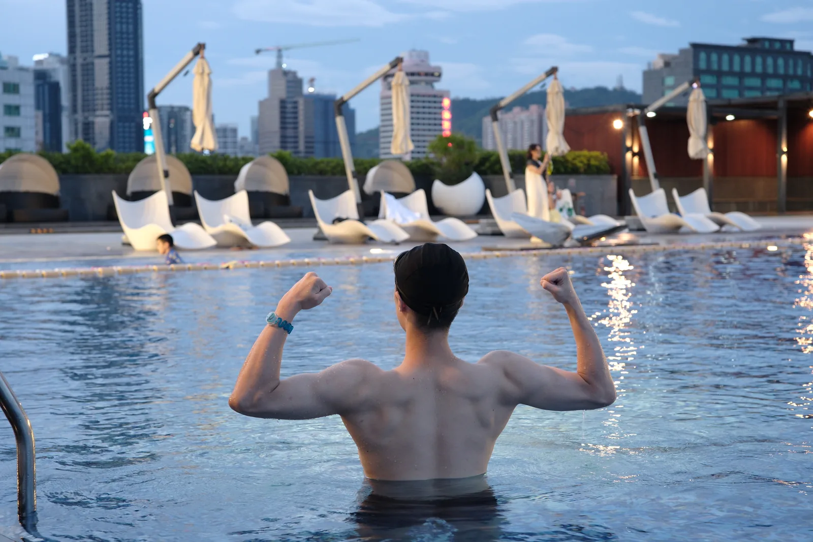
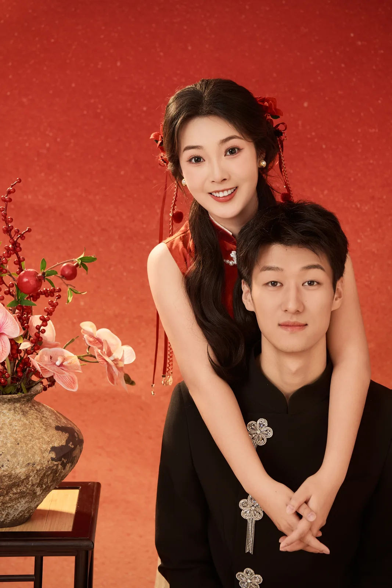
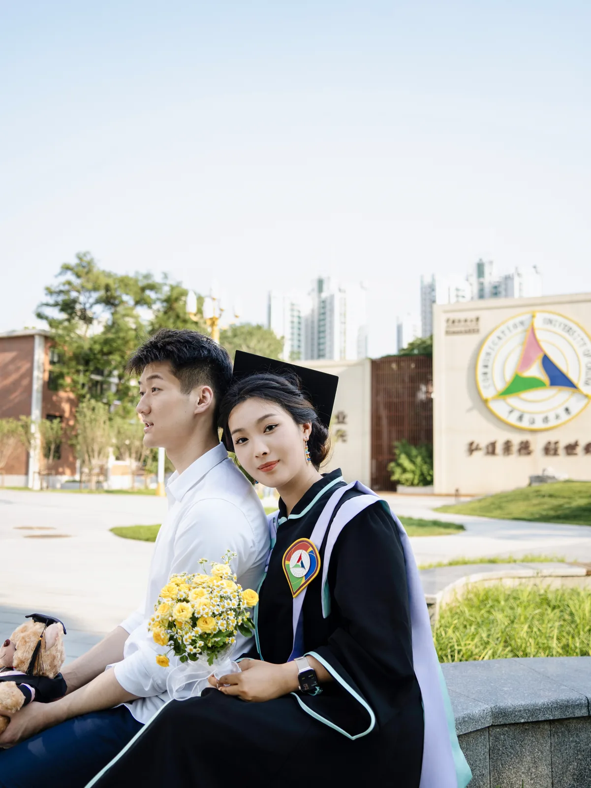
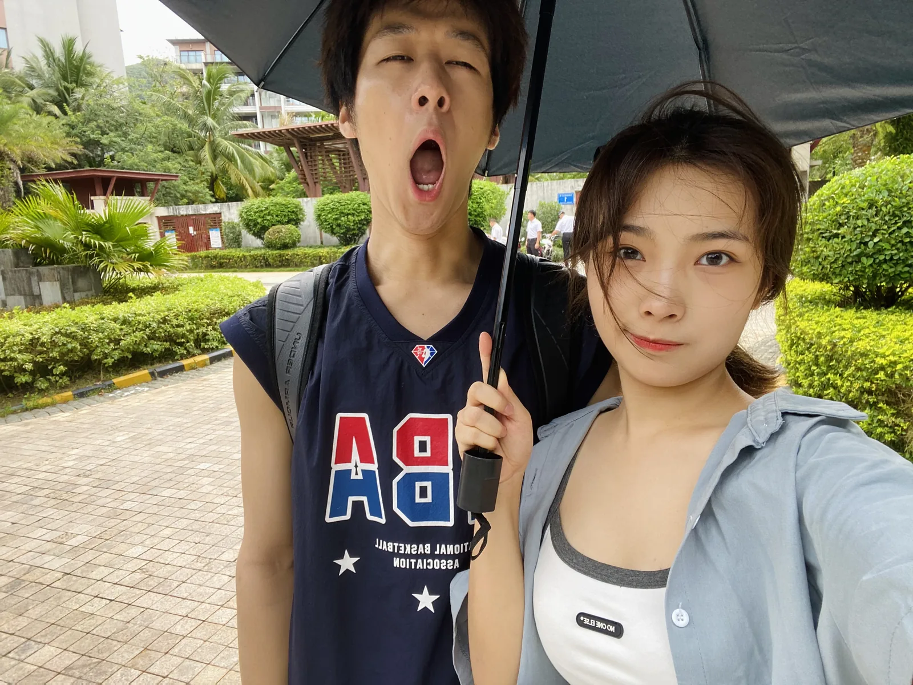
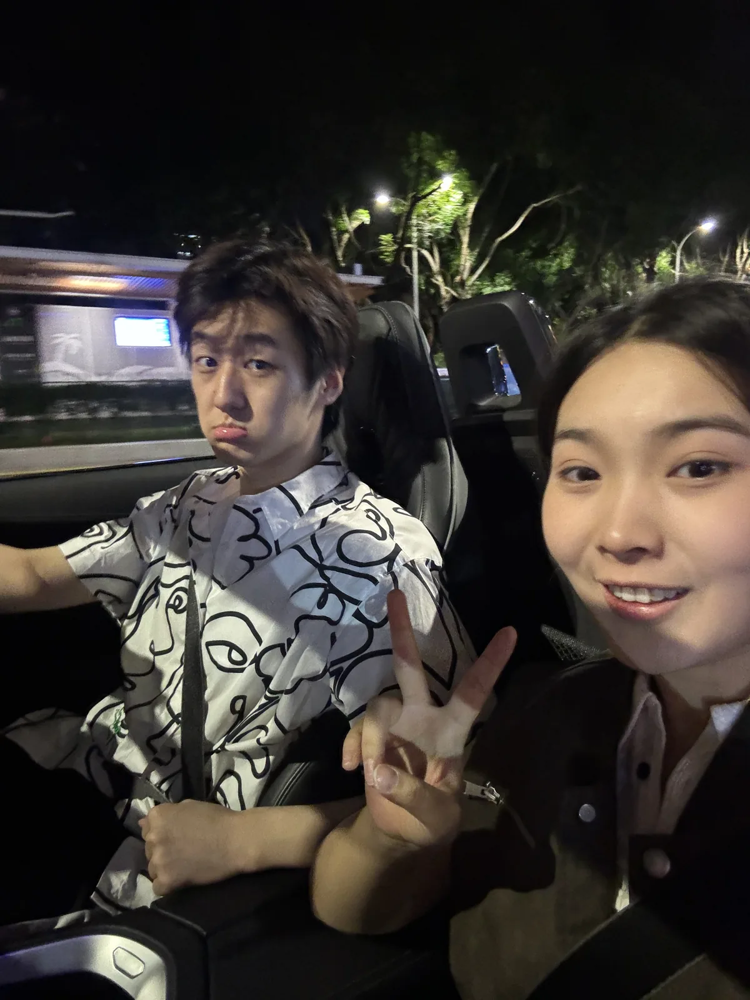

KEEP IN TOUCH
抖音里，
叫我潘潘潘冠冠。
篮球、运动，还有生活里好玩的事。
打开抖音，搜索账号 ↗